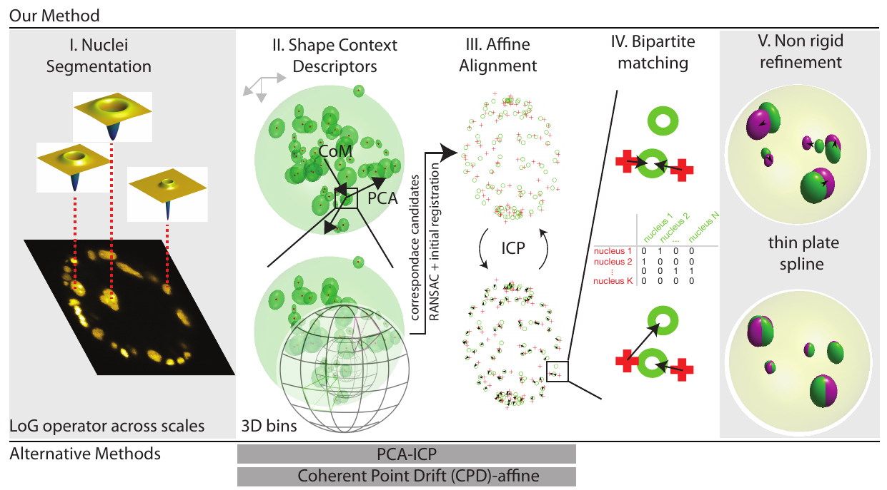
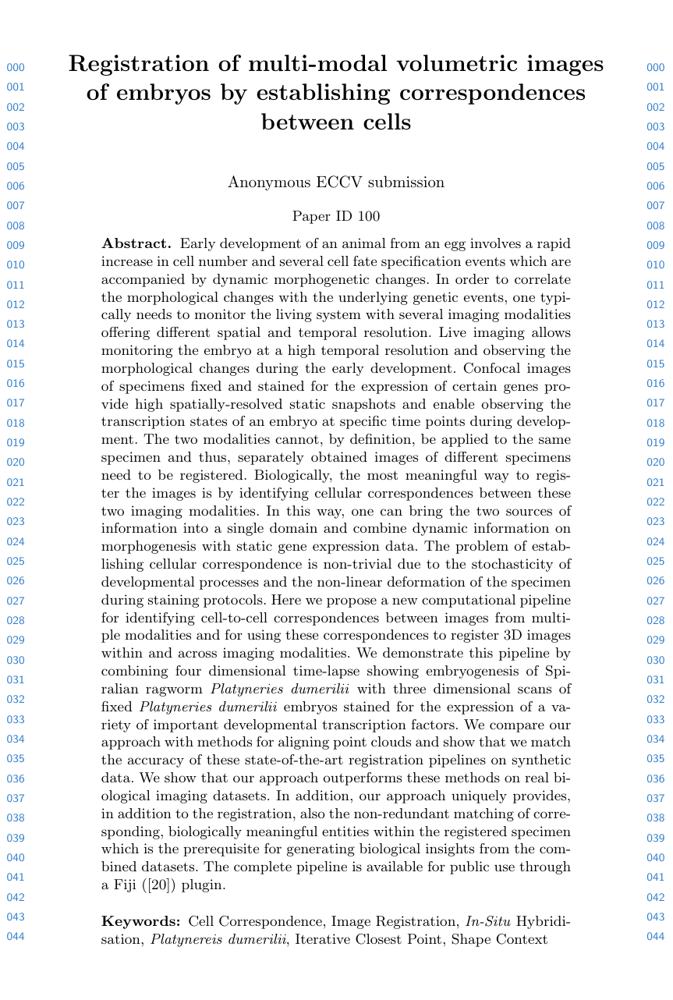

Registration of multi-modal volumetric images of embryos by establishing correspondences between cells
|
Manan Lalit
|
Mette Handberg-Thorsager
|
Yu-Wen Hsieh
|
|
Florian Jug
|
Pavel Tomancak
|
|
Center for Systems Biology Dresden
|
Max-Planck Institute of Molecular Cell Biology and Genetics
|
|
In BioImage Computing @ ECCV 2020
|

A
B
C
|
(A) 2-D schematic illustrating the idea: two distinct specimens (left: source and middle: target) are compared in order to estimate pair-wise cell nuclei correspondences and an optimal transform that registers the source onto the target (right)
(B, C) 2-D schematic illustrating the two use cases: (left, B) images of distinct, independent in-situ specimens, acquired through confocal microscopy are registered to each other, which enables formation of an average, virtual atlas. (right, C) images of in-situ specimens, acquired through confocal microscopy are registered to the appropriate frame (tp: time point) in a time-lapse movie acquired through SPIM imaging. Nuclei indicated in darker shades are the ones expressing the transcription factor being investigated. These transcription factor intensities are transferred from the source nucleus to the corresponding target nucleus in both use cases.
|
Early development of an animal from an egg involves a rapid increase in cell number and several cell fate specification events which are accompanied by dynamic morphogenetic changes.
In order to correlate the morphological changes with the underlying genetic events, one typically needs to monitor the living system with several imaging modalities offering different spatial and temporal resolution.
Live imaging allows monitoring the embryo at a high temporal resolution and observing the morphological changes during the early development.
Confocal images of specimens fixed and stained for the expression of certain genes provide high spatially-resolved static snapshots and enable observing the transcription states of an embryo at specific time points during development.
The two modalities cannot, by definition, be applied to the same specimen and thus, separately obtained images of different specimens need to be registered.
Biologically, the most meaningful way to register the images is by identifying cellular correspondences between these two imaging modalities.
In this way, one can bring the two sources of information into a single domain and combine dynamic information on morphogenesis with static gene expression data.
The problem of establishing cellular correspondence is non-trivial due to the stochasticity of developmental processes and the non-linear deformation of the specimen during staining protocols.
Here, we propose a new computational pipeline for identifying cell-to-cell correspondences between images from multiple modalities and for using these correspondences to register 3D images within and across imaging modalities.
We demonstrate this pipeline by combining four dimensional time-lapse showing embryogenesis of Spiralian ragworm Platynereis dumerilii with three dimensional scans of fixed Platynereis dumerilii embryos stained for the expression of a variety of important developmental transcription factors.
We compare our approach with methods for aligning point clouds and show that we match the accuracy of these state-of-the-art registration pipelines on synthetic data.
We show that our approach outperforms these methods on real biological imaging datasets.
In addition, our approach uniquely provides, in addition to the registration, also the non-redundant matching of corresponding, biologically meaningful entities within the registered specimen which is the prerequisite for generating biological insights from the combined datasets.
The complete pipeline is available for public use through a Fiji plugin.
Overview

Figure illustrating the key elements of our pipeline:
(I) Normalized Laplacian of Gaussian operator is evaluated at multiple σ. Here, a two dimensional slice of a volumetric image is shown.The operators which provide the strongest local response are shown for three exemplary cell nuclei
(II) In order to ensure that the shape context geometric descriptor is rotationally covariant, we modify the original coordinate system (shown in gray, top left) to obtain a unique coordinate system (show in black) for each nucleus detection.
The Z-axis is defined by the vector joining the center of mass of the point cloud to the point of interest, the X-axis is defined along the projection of the first principal component of the complete point cloud evaluated orthogonal to the Z-axis.
The Y-axis is evaluated as a cross product of the first two vectors.
Since the sign of the first principal component vector is a numerical accident and thus not repeatable, we use both the possibilities and evaluate two shape context descriptors for each feature point in the source point cloud, in practice.
Next, the neighbourhood around each nucleus detection is binned in order to compute the shape context signature for each detection.
By comparing shape contexts resulting from the two clouds of cell nuclei detections and following up by RANSAC filtering to prune faulty correspondences, allows us to estimate a global 4 X 4-sized affine transform which coarsely registers the source (moving) point cloud to the target (fixed) point cloud (III) In order to obtain a tighter fit between the two clouds of cell nuclei detections, the iterative closest point algorithm is run. The procedure involves the iterative identification of the nearest neighbours (indicated by black arrows), followed by the estimation of the transform parameters (IV) At this stage, a Maximum Bipartite Matching is performed between the transformed moving cloud of cell nuclei detections and the static target cloud of cell nuclei detections, by employing the Hungarian Algorithm for optimization (V) Since the two specimens are distinct individuals, non-linear differences would persist despite the preceding, linear registration.
We improve the quality of the registration at this stage by employing a thin-plate spline transform and using the correspondences evaluated from the previous step as ground truth control points to estimate the parameters of the thin-plate spline transform
Results
Intramodal Registration |
Intermodal Registration |

A
|

B
|

C
|

D
|
|
A: DAPI channels indicating cell nuclei for two distinct in-situ specimens (source: green and magenta: target image). B: DAPI channels indicating cell nuclei for an in-situ specimen (source: green) being registered to the corresponding frame containing equivalent number of cell nuclei, in the time-lapse movie (target: magenta). Landmarks for source image are indicated as yellow spheres and labeled from 1 . . . 12. Similarly, landmarks for the target image are labeled from 1’ . . . 12’. C, D: After performing registration with our proposed pipeline, corresponding landmarks from the source and target images appear to be much closer in Euclidean distance.
|
Paper
|  |
Lalit, Handberg-Thorsager, Hsieh, Jug, Tomancak.
Registration of multi-modal volumetric images of embryos by establishing correspondences between cells.
In BioImage Computing @ ECCV 2020.
|
Acknowledgements
The authors would like to acknowledge the Light Microscopy Facility of MPI-CBG, Matthias Arzt from CSBD/MPI-CBG for helpful discussions on possible formulations for 3-D Shape Descriptor, and Tim-Oliver Buchholz and Tobias Pietzsch from MPI-CBG/CSBD for developing the BigDataViewer UI-Panel. This work was supported by the German Federal Ministry of Research and Education (BMBF) under the codes 031L0102 (de.NBI) and 01IS18026C (ScaDS2), and the German Research Foundation (DFG) under the code JU3110/1-1(FiSS). This webpage template was borrowed from some colorful folks.
|